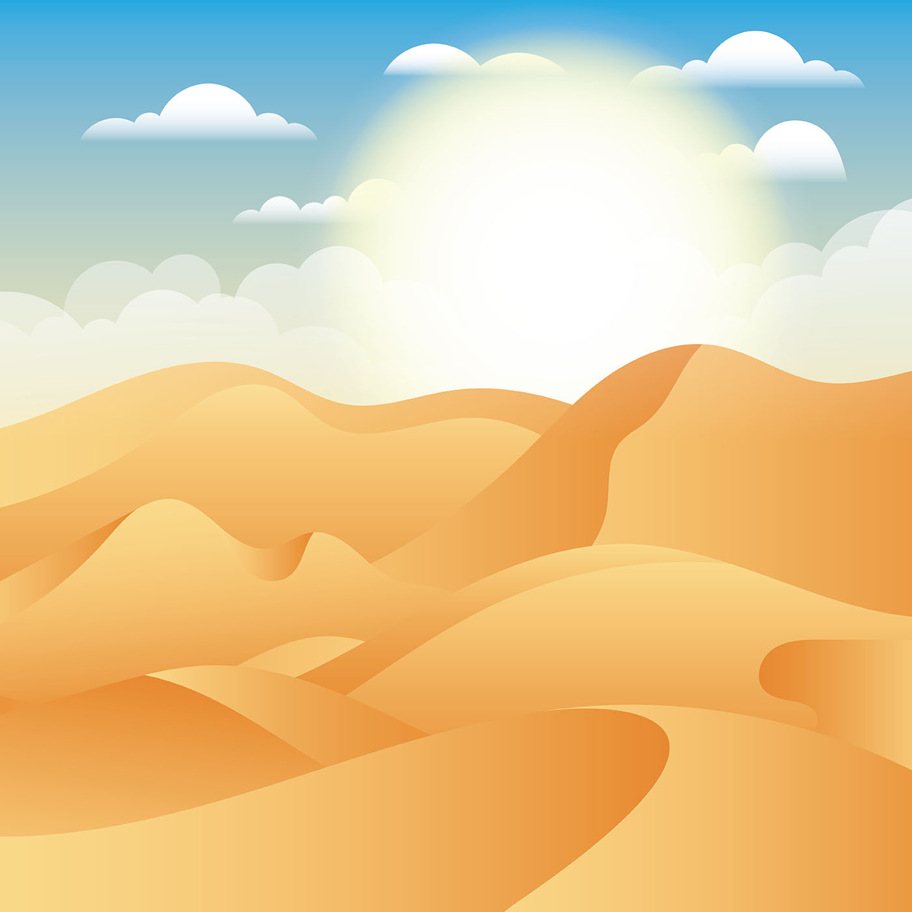
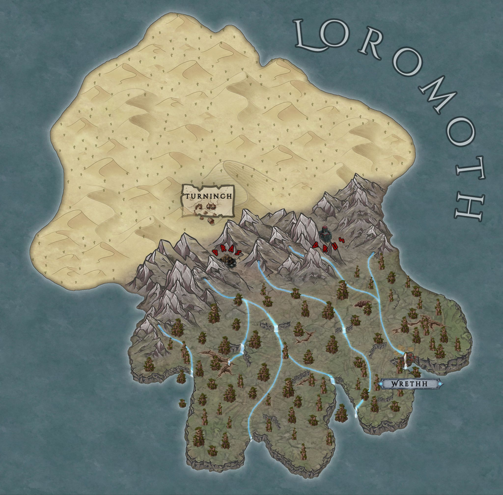
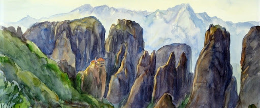

Loromoth
Loromoth ist einer der vier großen Kontinente und besteht aus Vadon mit den Vadoniern im Norden, den Bergen von Loromoth und Cureg mitden Quork im Süden.
Name
Die Guqual nennen den Kontinent "Lûrunað".
Vadon
Der Norden Loromoths ist von einer gigantischen gelb-roten Sandwüste bedeckt, dieses Gebiet trägt den Namen Vadon.
Dort zu Hause sind die Vadonier.


Geschichte
Die eintönige Sandwüste war nicht immer trocken, sondern einst fruchtbar und erblühte. Unter einer dicken Schicht aus Sand liegt immer noch ein nährreicher Boden versteckt, den die Vadonier zur Nahrungsaufnahme verwenden. Und auch der Glaube der Vadonier ist fest mit der Geschichte ihrer Heimat verbunden, sodass Vadonier noch heute nach den Überresten der einst vorhandenen Flora und Fauna suchen.Turninch
Da Vadonier hauptsächlich Nomaden sind, gibt es auch nur wenige Städte. Eine dieser Städte ist Turninch. Die Stadt liegt am südwestlichen Rand der Wüste Vadons. Von Turninch führt einer der zwei Wege in den Gebirgskamm und verbindet somit Vadon und die Berge von Loromoth. Die Stadt wurde von einigen Vadoniern gegründet, die es aufgaben, das heilige Land zu suchen. Über Jahre hinweg ließen sich immer mehr Vadonier nieder. Turninch ist ihre Hauptverbindung zur Außenwelt und anderen Zivilisationen.Berge von Loromoth
Die Berge von Loromoth liegen wie ein Gürtel auf Loromoth und trennen Vadon im Norden von Cureg im Süden.


Sie bestehen aus kahlen, hohen Bergen mit vielen Klüften, die teilweise mit kleinen Höhlen durchzogen und von Bäumen dicht bewachsen sind.
Insgesamt gibt es nur zwei Durchgänge, die eine Reise zwischen Cureg und Vadon ermöglichen.
Dras und Drus
Diese beiden Durchgänge verstärken die Festungen Dras im Westen und Drus im Osten. Sie wurden von Drasken erbaut, die sich ??? dort niederließen und einen Kompromiss mit den Quork eingingen. Sie bauten Festungen als Schutz vor den Vadoniern und durften im Gegenzug in den Bergen von Loromoth siedeln. Die gewaltigen Befestungen wurden in den Stein geschlagen. Nur die Mauer, die den Durchgang von Vadon nach Cureg versperrt, wurde aufgeschüttet. Massive Steintore ermöglichen dennoch Durchlass. Mit einem kilometerlangen Gang sind die beiden Festungen miteinander verbunden.
Cureg

Cureg wird die südliche Hälfte Loromoths genannt. Das Gebiet ist von tiefen Tälern, vielen Flüsse und Wasserfällen gezeichnet.
Cureg beherbergt eine vielfältige Flora, die einen starken Kontrast zu dem trockenen Nordteil des Kontinents bietet.
Zusätzlich ist sie die Heimat der Quork, die um die vielen Wasserfälle leben.
Wrethh
Im Südwesten Curegs befindet sich die Hauptstadt der Quork, die sie selbst Wrethh nennen. Unzählige Plattformen und Höhlen, die teils hinter Wasserfällen liegen, formen die größte Kolonie der Quork. Sie ist das Zuhause sehr vieler Quork; andere Rassen haben es allerdings schwer sich dort fortzubewegen, sofern sie nicht auch fliegen könnnen, weshalb man fast ausschließlich Quork antrifft.